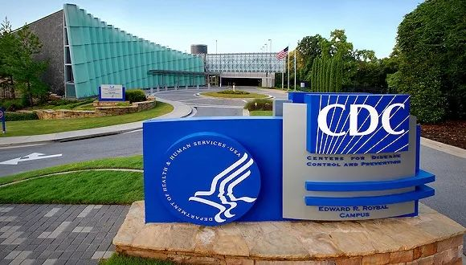
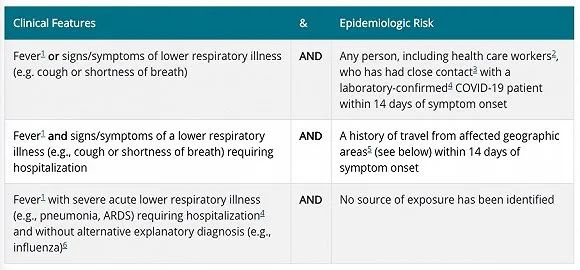

新冠疫情蔓延六大洲，世卫密切监测新进展
原文链接 备份链接 目前包括中国大陆在内，全球已经有41个国家和地区出现了疫情，其中，韩国是中国大陆之外疫情蔓延最快的国家。 尽管如此，世卫组织不希望在“没有谨慎和清晰地分析事实情况之前”仓促宣布疫情为全球“大流行病” 文 |《财经》特派 …
图片来源：Wikimedia Commons
记者：肖恩
“
有专家认为，检测人数少是美国目前确诊病例不多的原因。
”
疑似首例新冠肺炎社区传播病例让美国提高了警惕，疾病控制与预防中心（CDC）也为此修改检测标准。但从1月21日确诊首例病例至今，美国的防疫工作遭遇诸多质疑。
CDC主任雷德菲尔德（Robert Redfield）27日表示，已经发布新版新冠病毒检测指导方针。按照新标准，如果患者出现发烧和严重的下呼吸道感染症状，并排除了流感和其他呼吸道疾病的可能，即便没有相关接触史也能进行检测。而根据此前的检测标准，接受检测的患者除了出现症状，还需要有中国旅行史或与确诊患者密切接触史。

图片来源：CDC官网截图
正因为如此，美国首例疑似社区传播病例检测时间被推迟了四天。
2月26日，一名来自加州索拉诺县的女性确诊感染，但感染路径不明，可能是美国首例社区传播病例。该患者在2月19日就诊时就出现了新冠肺炎症状，当时医生要求对其进行病毒检测，却因为她不符合检测标准被搁置。直到23日，在医生的坚持下，CDC才对该患者进行检测，并于26日确认检测结果呈阳性。这时距离患者入院治疗已经过了整整一周。
但CDC表示，他们直到23日才收到报告要求对该患者样本进行检测，正在对事件进行调查。CDC也承认，按照新版的检测标准，患者确诊的时间可能会提前。
患者正在萨克拉门托县的加州大学戴维斯分校医学中心接受治疗。加州议员加拉门迪（John Garamendi）对有线电视新闻网（CNN）透露，患者病情严重，已经采取气管插管治疗。
患者的家人以及与其有过密切接触的工作人员都接受了检测，正在居家隔离中。
加州大学戴维斯分校的一名学生也因为有接触病毒的风险，已经接受核酸检测，正居家隔离。加州优洛县卫生官员表示，因为该学生的鼻拭子和咽拭子样本要送到亚特兰大的疾控中心检测，近几天内不会有结果。他的两名室友也在学校隔离中，未出现症状。该校医学中心并不在校园内，两地相距约27公里。暂不清楚该学生是否与上述确诊患者有接触。
此外，CDC还将伊朗、意大利、韩国和日本都纳入重点关注国家。从上述国家入境的旅客都需要在机场接受健康检查。
核酸检测试剂盒的供应也是影响检测效率的一个重要因素。据美联社报道，CDC在上个月就宣布研发出试剂盒，并在本月初获得授权，将试剂盒分发至50个州的公共卫生实验室。但CDC在26日承认，其中大部分试剂盒存在缺陷，检测结果不准确。
CDC表示，将努力研制新版试剂盒，但具体面世时间还不清楚。至本周初，美国仅有六个州的实验室获得了有效的试剂盒。加州州长纽森（Gavin Newsom）27日称，该州目前约有8400人正在接受医学观察，但试剂盒仅有200个。
新冠病毒检测通常分三步，其中出现问题的是第三步，因此目前有40个实验室得到联邦食品药品监督管理局（FDA）授权，利用现有试剂盒的前两步检测结果做出诊断。
另外，所有检测样本都需要送至联邦检测中心，进一步拖长了确诊时间。美国卫生与公众服务部（HHS）部长阿扎尔（Alex Azar）表示，到本周末，全国具备检测能力的实验室预计将增加到93个，同时有70个企业正竞相研发“临床诊断”检测技术。
阿扎尔27日表示，美国全国仅有约3600人接受了检测。有专家认为，检测人数少或许就是美国目前确诊病例不多的原因。
尽管首例传播源未明的病例让美国上下紧张起来，但前一天在白宫新闻发布会上多次强调新冠肺炎不过就像流感的总统特朗普，依然表现出高度乐观的态度。他27日在活动上再次表示，美国在抗击新冠疫情方面做得很好，总有一天这种病毒会奇迹般消失。高盛分析师发出了警告，若股市因新型冠状病毒而继续下跌，特朗普或将输掉今年的大选。
此外，有两名官员对路透社透露，特朗普政府考虑动用《国防生产法案》中的特殊权力，迅速扩大口罩、手套和防护服等防护用品生产。法律规定，总统有权因国家安全等原因，调整扩大有需求的关键原料和产品生产。3M和霍尼韦尔两家全球主要口罩制造商均是美国企业。
阿扎尔此前表示，美国N95口罩的需求量约为3亿只，但目前符合标准的库存仅有1200万只，还有500万只因为过期等原因，未能得到国家职业安全卫生研究所 （NIOSH）认证。
受到总统肯定的防疫工作似乎也不那么尽如人意。一名来自HHS的女性 爆料人称，十多名参与接收撤离武汉人员的人员在工作过程中缺乏应有的培训和防护措施。爆料中称，这些工作人员都没有出现疑似感染症状，也未接受隔离或新冠病毒检测。这名“吹哨人”还表示，自己在提出这一担忧后被无故强迫调换岗位，正寻求保护。
据《华盛顿邮报》报道，这批工作人员来自卫生与公众服务部下属的儿童和家庭管理局（ACF）。有知情人士称，未对工作人员进行新冠病毒检测是因为他们没有达到检测标准。
前CDC主任弗里登（Thomas R. Frieden）拒绝对该爆料作出评论，但他多次强调，新冠病毒将在美国境内更大规模传播。弗里登认为，新冠肺炎必将演变成全球“大流行病”，但有多严重还未可知。
美国国土安全部在备灾网站上呼吁民众做好防疫准备，包括囤好两周的食物和水、定期检查家中常备的常规处方药和非处方药等。
截至目前美国共有确诊病例60例，其中3例是近期从武汉撤离的美国人，另外有42例是“钻石公主”号邮轮乘客，14例本人或密切接触者有中国旅行史，1例感染路径未明。
未经授权 禁止转载

原文链接 备份链接 目前包括中国大陆在内，全球已经有41个国家和地区出现了疫情，其中，韩国是中国大陆之外疫情蔓延最快的国家。 尽管如此，世卫组织不希望在“没有谨慎和清晰地分析事实情况之前”仓促宣布疫情为全球“大流行病” 文 |《财经》特派 …
原文链接 备份链接 韩国1月20日发现首例确诊病例，此后一个月疫情发展缓慢，到2月18日确诊31例。2月19日后突然暴增，一周新增超过1200例。 18日确诊的第31号患者，被视为“超级传播者”。 韩国新冠疫情的一大特征是，在特定群 …
原文链接 备份链接 【财新网】（记者 丁捷 综合）中国国内疫情统计数据呈现向好的趋势，根据各地消息，全国已有六省下调重大突发公共卫生事件应急响应级别。尽管部分重症、危重症病例转为死亡病例，但总量在减少。另一方面，新冠肺炎疫情拉响全球警报， …
原文链接 备份链接 意大利米兰街头。图片来源：半岛电视台 “ 全球新冠肺炎疫情播报，持续更新。 ” （本文持续更新中，点击左下角阅读原文，实时跟踪国际疫情动态。文中段首所示时间为本文更新时间。） 意大利 0800 【意大利新冠肺炎死亡病例 …
原文链接 备份链接 新冠肺炎疫情的发展形势，正在全球范围内急剧变化。 根据中国各省卫健委官方发布消息来看，截至 2 月 24 日上午 9 时，全国已有 23 个省（自治区、直辖市）在 23 日全天的新增确诊病例为零，其中包括北京、湖南、河 …